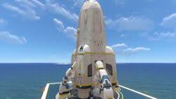
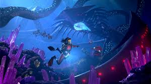
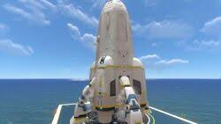
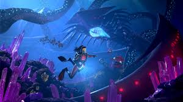

A História Completa de Subnautica
A Missão da Aurora e a Queda em 4546B
A Aurora era uma nave de colonização da corporação Alterra, enviada para estabelecer uma rede de portais entre sistemas estelares. Seu trajeto passava pelo planeta 4546B para investigar a expedição Degasi, que havia desaparecido. No entanto, a Aurora foi abatida por um poderoso raio disparado de uma estrutura alienígena de defesa em terra, forçando um pouso de emergência e espalhando destroços pela superfície do oceano alienígena.
Os Degasi: A Expedição Perdida
Uma das histórias mais trágicas de *Subnautica* envolve os tripulantes da nave Degasi, uma pequena nave mercante derrubada dez anos antes da Aurora. A tripulação era composta pelo empresário Paul Torgal, seu filho Bart Torgal, e a mercenária Marguerit Maida. Eles construíram bases improvisadas no oceano, mas a luta pela sobrevivência os consumiu. Maida, determinada e destemida, tentou matar um leviatã com as próprias mãos, desaparecendo nas águas profundas. Enquanto isso, Paul e Bart ficaram isolados e acabaram sucumbindo à infecção do vírus Kharaa.
O Vírus Kharaa e os Arquitetos
Durante a exploração das ruínas alienígenas, você descobre que o planeta 4546B foi utilizado como uma instalação de quarentena por uma antiga civilização conhecida como Arquitetos. Eles estudavam o vírus Kharaa, uma doença altamente contagiosa capaz de dizimar civilizações. Para conter o Kharaa, os Arquitetos bloquearam o planeta e ativaram um sistema de defesa, derrubando qualquer nave que tentasse pousar – incluindo a Aurora e a Degasi.
Sua missão agora é encontrar uma cura para a infecção, já que você também está contaminado. Isso exige investigar as profundezas do oceano, onde o leviatã Sea Emperor, a chave para a cura, está aprisionado.
A Jornada Até o Leviatã Imperador do Mar
O Sea Emperor Leviathan é uma criatura gigantesca e benevolente, aprisionada por séculos nas ruínas dos Arquitetos. Embora seja a última de sua espécie, ela ainda possui uma poderosa habilidade: produzir enzimas que podem curar o Kharaa. No entanto, os ovos da criatura precisam ser libertados e seus filhotes devem se desenvolver no ambiente natural do oceano para produzir as enzimas.
Você ajuda a eclodir os ovos, e, com a liberação dos filhotes, a cura do Kharaa se espalha pelo ecossistema. Ao tocar na enzima produzida pelos filhotes, você finalmente se livra da infecção e está pronto para continuar sua missão.
Os Desafios da Exploração Submarina
Para sobreviver e explorar as áreas mais profundas, você precisa construir veículos como o Seamoth e o Prawn Suit. Com esses veículos, é possível navegar pelas cavernas submersas e zonas vulcânicas, enfrentando predadores como o Reaper Leviathan, que patrulha as áreas mais rasas, e o Ghost Leviathan, que domina as profundezas.
A construção de bases submarinas é fundamental para proteger você e armazenar recursos. Elas também permitem a criação de tecnologias avançadas para sobreviver nos biomas mais perigosos. No entanto, o ambiente do planeta é implacável, e gerenciar oxigênio e energia é um desafio constante.
A Fuga: Construindo o Foguete Neptune
Depois de curar a infecção e desativar o sistema de defesa do planeta, você pode finalmente começar a construção do foguete Neptune. Esse foguete é sua única chance de deixar 4546B. A construção exige uma quantidade massiva de recursos, encontrados nos biomas mais perigosos do oceano.
Uma vez que o foguete está pronto, você embarca em sua jornada de retorno para casa. Ao decolar, você observa pela última vez o vasto oceano que desvendou, deixando para trás os mistérios não resolvidos de 4546B.
O Legado dos Arquitetos e a Sequência em Below Zero
Mesmo escapando do planeta, você descobre que os mistérios de 4546B estão longe de serem resolvidos. Quem eram os Arquitetos? Quais eram seus planos? E o que aconteceu com Marguerit Maida? Esses enigmas são abordados em Subnautica: Below Zero, uma sequência do jogo que se passa nos polos congelados do planeta.
Em *Below Zero*, novos perigos e criaturas aguardam, revelando ainda mais sobre a presença dos Arquitetos e seu legado. Marguerit, que todos acreditavam estar morta, reaparece, vivendo isolada em uma estação improvisada. A narrativa aprofunda a busca por respostas sobre a extinção dos Arquitetos e as implicações do Kharaa.

 


